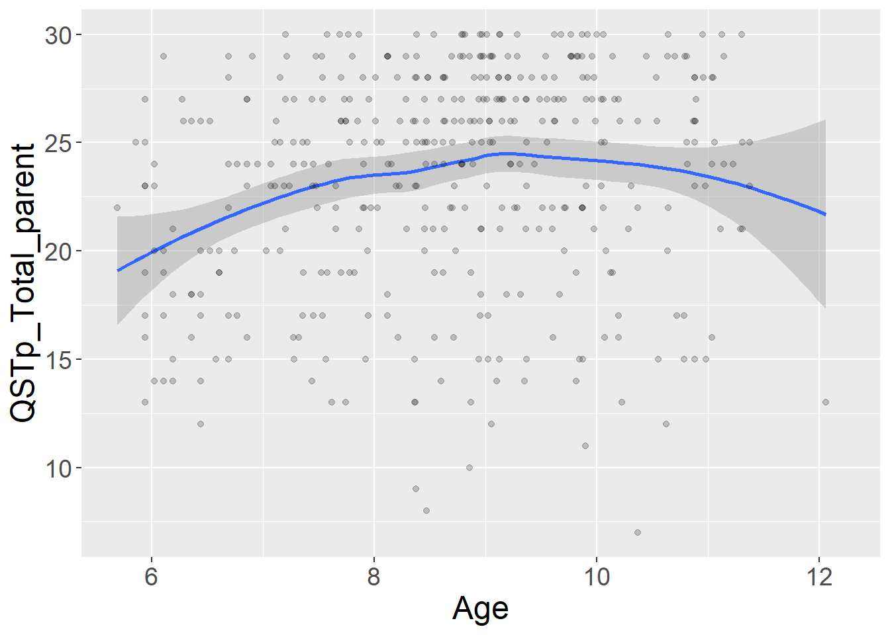
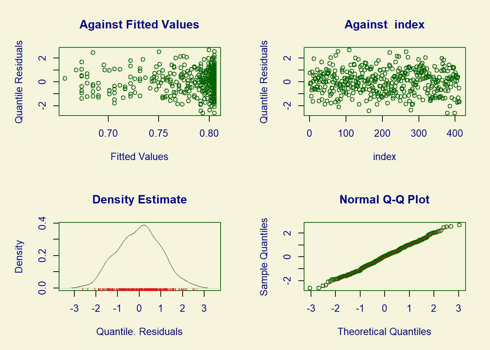
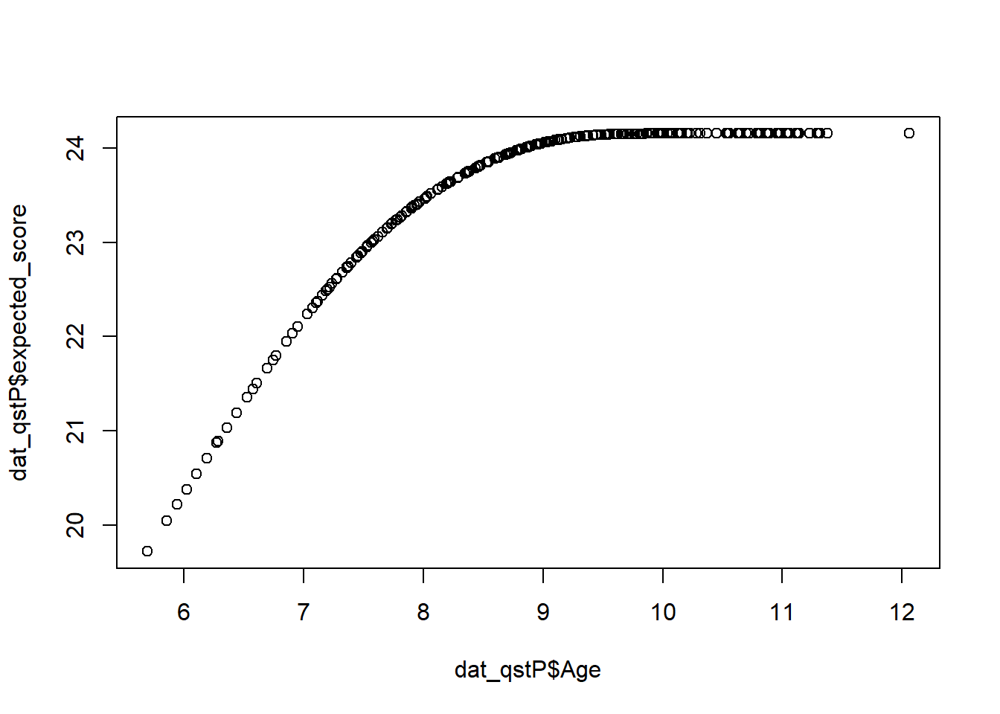
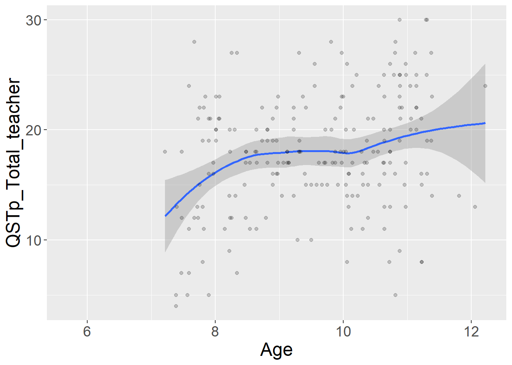
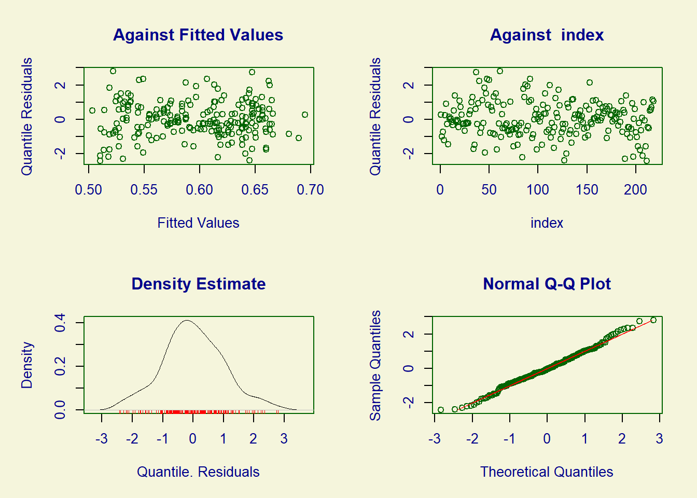
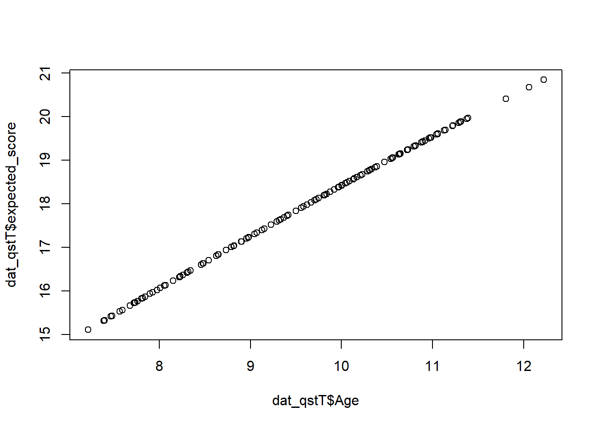
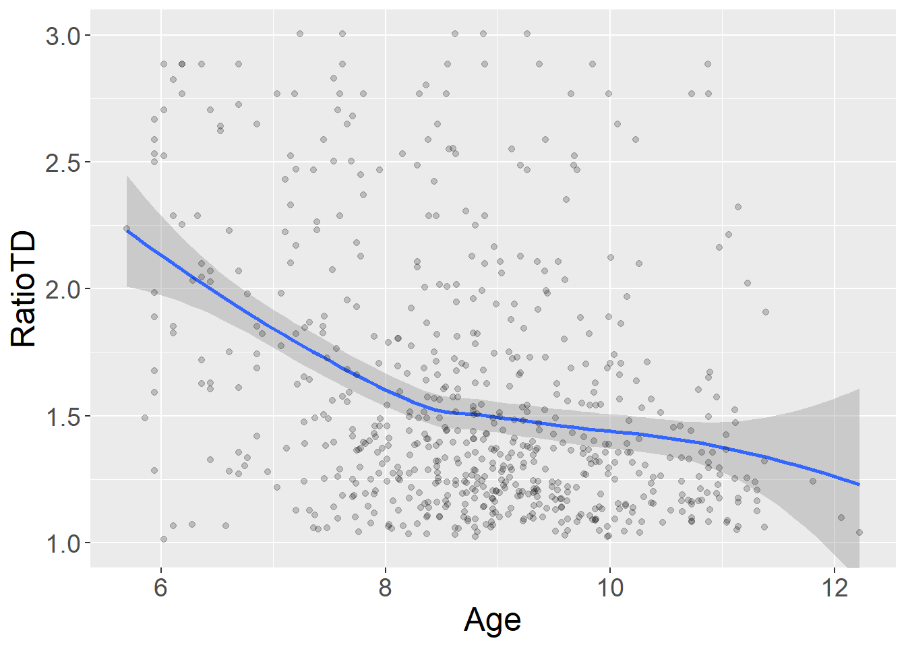
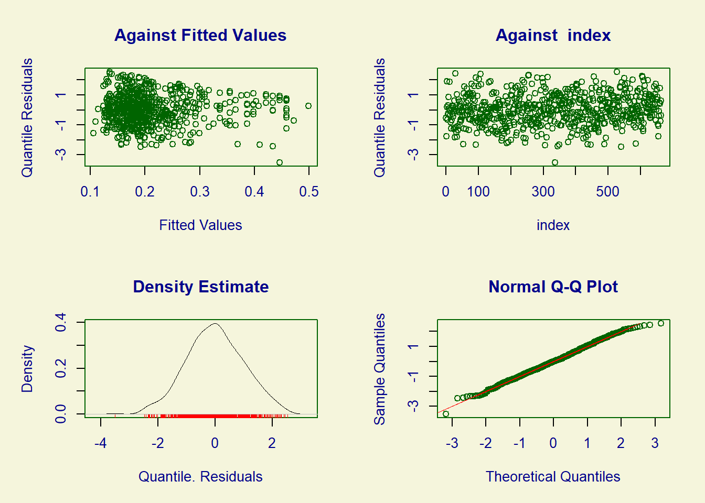
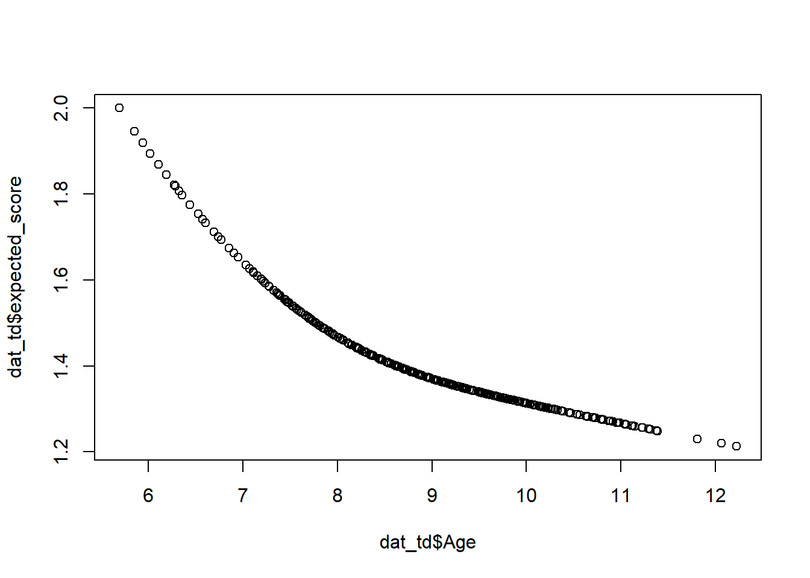
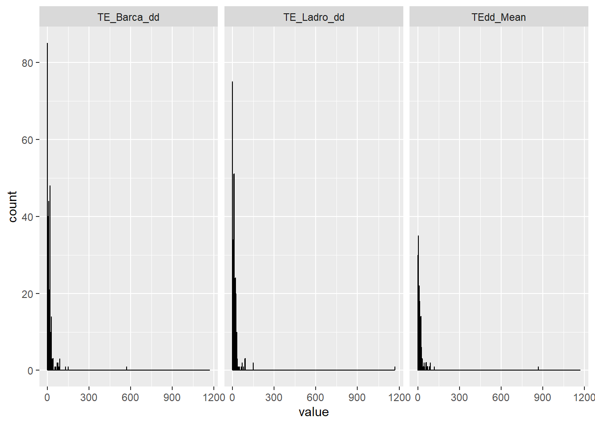

Parents responded to 10 items regarding their children sense of time. The items were on a 4-point Likert scale (0-3) and, as clear from Figure 1, the response distribution was extremely skewed with parents almost never reporting extremely high negative values.
var ="QSTpadua_parent"items = dd$Var_name[dd$Level=="item"&dd$ScaleName==var]itemsQstParent = items[!is.na(items)]df_melted <-melt(df, id.vars =c("Grade", "Gender", "Code", "Age"),measure.vars = itemsQstParent)ggplot(df_melted, aes(x = value)) +geom_histogram(binwidth = .5, fill ="orange", color ="black") +facet_wrap(~variable, ncol =5)
Warning: Removed 2893 rows containing non-finite outside the scale range
(`stat_bin()`).
Figure 1
Factor structure
Given the properties of the Likert distribution, we thus fit a single-factor CFA using DWLS estimation for ordinal data. The model, however, does not have a great fit. Inspecting modification indices, it clearly appears that positive items (see also the distributions of items 1,2,4,5,6) are more similar than it should be.
I added two covariances, but this does not help much. Modeling covariance across all the positive items gives a perfect fit, but loadings of positive items almost disappear.
An alternative solution might be fitting a two-factor model. This has optimal fit indices, however, the correlation between the two LV is very low (.14). Fitting a hierarchical model raises convergence issues.
A final solution might be fitting a bifactor model. This has again optimal fit indices, however, loadings on the general factor are good for negative items but small <.30 for positive items.
`geom_smooth()` using method = 'loess' and formula = 'y ~ x'
Warning: Removed 288 rows containing non-finite outside the scale range
(`stat_smooth()`).
Warning: Removed 288 rows containing missing values or values outside the scale range
(`geom_point()`).

Figure 2
To better estimate standardized scores across age, we adopted gamlss and a Beta Binomial family to account for the ordinal nature of the data and the bounds.
GAMLSS-RS iteration 1: Global Deviance = 2471.323
GAMLSS-RS iteration 2: Global Deviance = 2352.001
GAMLSS-RS iteration 3: Global Deviance = 2344.142
GAMLSS-RS iteration 4: Global Deviance = 2344.038
GAMLSS-RS iteration 5: Global Deviance = 2344.044
GAMLSS-RS iteration 6: Global Deviance = 2344.049
GAMLSS-RS iteration 7: Global Deviance = 2344.052
GAMLSS-RS iteration 8: Global Deviance = 2344.054
GAMLSS-RS iteration 9: Global Deviance = 2344.055
plot(fit_QSTp)

******************************************************************
Summary of the Randomised Quantile Residuals
mean = -0.002251905
variance = 0.9929123
coef. of skewness = 0.00717683
coef. of kurtosis = 2.649534
Filliben correlation coefficient = 0.9983628
******************************************************************
dat_qstP$mu <-predict(fit_QSTp, what ="mu", type ="response")# Expected score (0..30)dat_qstP$expected_score <-30* dat_qstP$muplot(dat_qstP$Age,dat_qstP$expected_score)

# z-scoredat_qstP$qstp_parent_z<-residuals(fit_QSTp, what ="z-scores")norms_qstP <-matrix(NA_real_, nrow =length(perc_list), ncol =length(ageBrack))colnames(norms_qstP) <-paste0("age-",ageBrack)rownames(norms_qstP) <- perc_listfor (i inseq_along(ageBrack)) { pa <-predictAll(fit_QSTp,newdata =data.frame(Age = ageBrack[i]),type ="response") # get mu, sigma on response scale mu_i <- pa$mu sigma_i <- pa$sigma# Beta–binomial quantiles: returns integers in 0..bd norms_qstP[, i] <-qBB(p = perc_list, mu = mu_i, sigma = sigma_i, bd =30)}
Time sense teachers
As for the parent questionnaire, teachers responded to 10 items on a 4-point Likert scale. In this case, however, we only have positively-keyed items and, with the exception of items 1, 6, and 10 (Figure 3), most answers receive the highest score.
`geom_smooth()` using method = 'loess' and formula = 'y ~ x'
Warning: Removed 482 rows containing non-finite outside the scale range
(`stat_smooth()`).
Warning: Removed 482 rows containing missing values or values outside the scale range
(`geom_point()`).

Figure 4
We thus follow the same gamlss approach as before.
dat <- dfdat_qstT = dat[!is.na(dat$QSTp_Total_teacher),c("Code","Age","QSTp_Total_teacher")]fit_QSTt <-gamlss(cbind(QSTp_Total_teacher, 30- QSTp_Total_teacher) ~pbm(Age),sigma.fo =~pbm(Age), family = BB,#BEINF,data = dat_qstT)
GAMLSS-RS iteration 1: Global Deviance = 1333.225
GAMLSS-RS iteration 2: Global Deviance = 1318.764
GAMLSS-RS iteration 3: Global Deviance = 1318.953
GAMLSS-RS iteration 4: Global Deviance = 1318.958
GAMLSS-RS iteration 5: Global Deviance = 1318.962
GAMLSS-RS iteration 6: Global Deviance = 1318.962
plot(fit_QSTt)

******************************************************************
Summary of the Randomised Quantile Residuals
mean = 0.003315505
variance = 1.0133
coef. of skewness = 0.1292019
coef. of kurtosis = 3.080507
Filliben correlation coefficient = 0.996891
******************************************************************
dat_qstT$mu <-predict(fit_QSTt, what ="mu", type ="response")# Expected score (0..30)dat_qstT$expected_score <-30* dat_qstT$muplot(dat_qstT$Age,dat_qstT$expected_score)

# z-scoredat_qstT$qstp_teacher_z<-residuals(fit_QSTt, what ="z-scores")norms_qstT <-matrix(NA_real_, nrow =length(perc_list), ncol =length(ageBrack))colnames(norms_qstT) <-paste0("age-",ageBrack)rownames(norms_qstT) <- perc_listfor (i inseq_along(ageBrack)) { pa <-predictAll(fit_QSTt,newdata =data.frame(Age = ageBrack[i]),type ="response") # get mu, sigma on response scale mu_i <- pa$mu sigma_i <- pa$sigma# Beta–binomial quantiles: returns integers in 0..bd norms_qstT[, i] <-qBB(p = perc_list, mu = mu_i, sigma = sigma_i, bd =30)}
Time knowledge and orientation
The time orientation questionnaire is composed of 16 questions about time knowledge and orientation. The first 10 items measure time knowledge, while the last 6 measure time orientation. Items are scored as 1 if correct or 0 if wrong (Figure 5).
# Time Orientation #### var ="OTm"items = dd$Var_name[dd$Level=="item"&dd$ScaleName==var]itemsTimeOt = items[!is.na(items)]df_melted <-melt(df, id.vars =c("Grade", "Gender", "Code", "Age"),measure.vars = itemsTimeOt)ggplot(df_melted, aes(x = value)) +geom_histogram(binwidth = .5, fill ="orange", color ="black") +facet_wrap(~variable, ncol =8)
Warning: Removed 3036 rows containing non-finite outside the scale range
(`stat_bin()`).
Figure 5
Factor structure
The overall model shows good, but not perfect fit to the data. Looking at the modification indices, items 12 and 14 might be problematic.
The two tests measuring time discrimination and estimation cannot be modeled using factor analyses as they are either composed by two items (time estimation) or return a single score based on the lowest discrimination ratio calculated with adaptive processes.
Time discrimination
For time discrimination, the distribution of the scores is again very skewed (see Figure 7), with most children scoring between 1 and 1.5.
# dd$Var_name[dd$Construct == "Time Discrimination"]ggplot(df, aes(x = RatioTD)) +geom_histogram(binwidth = .02, fill ="orange", color ="black")
Warning: Removed 37 rows containing non-finite outside the scale range
(`stat_bin()`).
Figure 7
Scaling and age trend
The Figure 8 shows that score increase with age (negative scores), but do not follow exactly a linear trend.
`geom_smooth()` using method = 'loess' and formula = 'y ~ x'
Warning: Removed 37 rows containing non-finite outside the scale range
(`stat_smooth()`).
Warning: Removed 37 rows containing missing values or values outside the scale range
(`geom_point()`).

Figure 8
To accomodate the distribution of this data, given by a ratio, we firstly transform it to a proportion and then use a Box–Cox t (original scale) transformatio. This is based on a Box–Cox transformation of the response variable, combined with a Student’s t distribution for the transformed values.
dat_td = dat[!is.na(dat$RatioTD),c("Code","Age","RatioTD")]dat_td$TD_prop <- (dat_td$RatioTD -1) / (3.005-1) # now in [0,1]# fit_TD <- gamlss(# TD_prop ~ pbm(Age),# sigma.fo = ~ pbm(Age),# family = BE, # Beta# data = dat_td# )# plot(fit_TD)# # # dat_td$TD_prop <- (dat_td$RatioTD - 1) / (3.004 - 1) # now in [0,1]# # fit_TD <- gamlss(# TD_prop ~ cs(Age),# sigma.fo = ~ cs(Age),# nu.fo = ~ 1,#pbm(Age), # probability of 0 (maps to Ratio=1)# tau.fo = ~ cs(Age), # probability of 1 (maps to Ratio=3)# family = BEINF, # Beta inflated at 0/1 because many have 1 or 3# data = dat_td# )# plot(fit_TD)# It is based on a Box–Cox transformation of the response variable, combined with a Student’s t distribution for the transformed values.fit_LMS <-gamlss( TD_prop ~pb(Age),sigma.fo =~pb(Age),nu.fo =~1,#pb(Age), # skewnesstau.fo =~1,#pb(Age), # kurtosisfamily = BCTo,data = dat_td)
GAMLSS-RS iteration 1: Global Deviance = -454.6218
GAMLSS-RS iteration 2: Global Deviance = -476.4945
GAMLSS-RS iteration 3: Global Deviance = -479.9202
GAMLSS-RS iteration 4: Global Deviance = -481.1456
GAMLSS-RS iteration 5: Global Deviance = -481.2112
GAMLSS-RS iteration 6: Global Deviance = -481.2116
plot(fit_LMS)

******************************************************************
Summary of the Quantile Residuals
mean = -0.0002819884
variance = 1.001585
coef. of skewness = -0.01787659
coef. of kurtosis = 2.814172
Filliben correlation coefficient = 0.9986811
******************************************************************
dat_td$mu <-fitted(fit_LMS, what ="mu", type ="response") # Expected score (0..30)dat_td$expected_score <-1+ dat_td$mu * (3.004-1)plot(dat_td$Age,dat_td$expected_score)

# z-scoredat_td$TD_z<-residuals(fit_LMS, what ="z-scores")norms_TD <-matrix(NA_real_, nrow =length(perc_list), ncol =length(ageBrack))colnames(norms_TD) <-paste0("age-",ageBrack)rownames(norms_TD) <- perc_listfor (i inseq_along(ageBrack)) { pa <-predictAll(fit_LMS,newdata =data.frame(Age = ageBrack[i]),type ="response") # get mu, sigma on response scale mu_i <- pa$mu sigma_i <- pa$sigma nu_i <- pa$nu tau_i <- pa$tau norms_TD[, i] <-qBCTo(p = perc_list, mu = mu_i, sigma = sigma_i, nu = nu_i, tau = tau_i)}norms_TD <-1+ norms_TD * (3.004-1)
Time estimation
For time estimation, the score is given by the absolute difference (in seconds) from the correct answer. The distribution of the scores is again very skewed (see Figure 9).
# Time Estimation ##### dd$Var_name[dd$Construct == "Time Estimation"]teItems <-c("TE_Barca_dd","TE_Ladro_dd","TEdd_Mean")df_melted <-melt(df, id.vars =c("Grade", "Gender", "Code", "Age"),measure.vars = teItems)ggplot(df_melted, aes(x = value)) +geom_histogram(binwidth = .5, fill ="orange", color ="black") +facet_wrap(~variable)
Warning: Removed 15 rows containing non-finite outside the scale range
(`stat_bin()`).

Figure 9
The correlations between the two items is very high, suggesting that common factors explained children performance in both items.
cor(df$TE_Barca_dd,df$TE_Ladro_dd, use ="complete.obs")
[1] 0.8745777
Scaling and age trend
The Figure 10 shows that score increase with age (lower discrepancies).
For time reproduction, children perceived 12 time sequences and reproduced them. The scores are calculated as the absolute value of the ratio between reproduced and correct time.
This, however, generates extremely skewed distributions of the scores (see Figure 11). Hence, we transformed the items in z scores before analysis.
Warning: Removed 337 rows containing non-finite outside the scale range
(`stat_bin()`).
Figure 11
Scaling and age trend
The Figure 12 shows that scores decrease almost linearly with age. We thus proceeded to normalize them all for age using gamlss and a BCTo family again.
GAMLSS-RS iteration 1: Global Deviance = 5971.067
GAMLSS-RS iteration 2: Global Deviance = 5904.687
GAMLSS-RS iteration 3: Global Deviance = 5903.808
GAMLSS-RS iteration 4: Global Deviance = 5903.459
GAMLSS-RS iteration 5: Global Deviance = 5903.319
GAMLSS-RS iteration 6: Global Deviance = 5903.261
GAMLSS-RS iteration 7: Global Deviance = 5903.235
GAMLSS-RS iteration 8: Global Deviance = 5903.223
GAMLSS-RS iteration 9: Global Deviance = 5903.216
GAMLSS-RS iteration 10: Global Deviance = 5903.212
GAMLSS-RS iteration 11: Global Deviance = 5903.211
GAMLSS-RS iteration 12: Global Deviance = 5903.21
GAMLSS-RS iteration 13: Global Deviance = 5903.209
for (var in items) {# Build formula dynamically fmla <-as.formula(paste(var, "~ pb(Age)"))# Fit the model fit <-gamlss(formula = fmla,sigma.fo =~pb(Age),family = BCTo, # or IG / GA / BCCG, depending on what you decideddata = dat_tr,trace =FALSE )# Compute z-scores z_name <-paste0(sub("PercDevAbs_", "", var), "_z") # e.g., "TR_2_z" dat_tr[[z_name]] <-residuals(fit, what ="z-scores")}
The resulting scores are well correlated with each other (see Figure 13)
Finally, we estimated whether the scales converge to ensure that all tap into similar constructs.
Raw correlations
With the exception of the time estimation score, the time scales are all correlated between each other and with participants’ age, but not with gender (Figure 14). The common age effect highlights the need for age norming to remove age-related covariance.
The model shows acceptable, yet quite low, fit indices. MI suggest that time discrimination and time reproduction scores may be more similar between each other than with other factors. This makes sense as the two have quite similar requests. With this specification, the model shows excellent fit to the data.